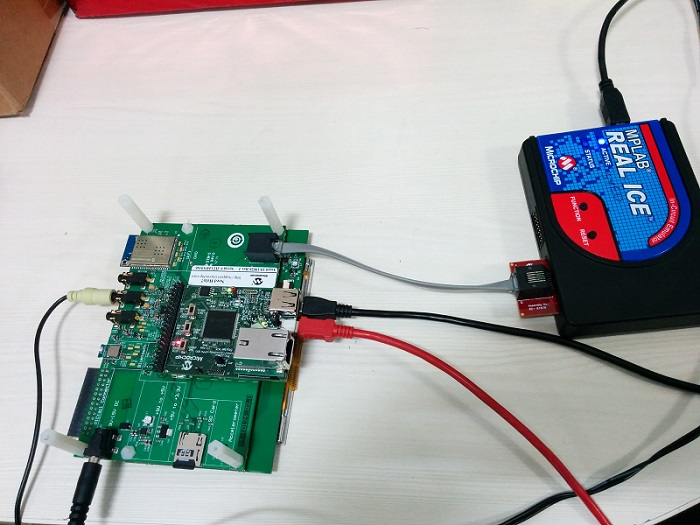

Description
This folder contains a series of applications which uses MPLAB Harmony v3 framework
for Quick Audio Prototyping, and in the process creates an SD card Audio Player/Reader.
- The Application "audio_player_lab1" is the basic audio application that generates an audio tone using a lookup table
- The Application "audio_player_lab2" is an extension of application "audio_player_lab1", it generates an audio tone using
a text file stored in an SD Card
- The Application "audio_player_lab3" is an extension of application "audio_player_lab2", it also generates an audio tone
using a text file stored in an SD Card. Additionally, it adds the SD card reader support to load audio files
- The Application "audio_player_lab4" is an extension of application "audio_player_lab3", implements an audio player by reading
".wav" audio files from the SD card
- The Application "audio_player_lab5" is an extension of application "audio_player_lab4", implements graphical user interface
to the audio reader (storing audio files in the SD card) and player (playing ".wav" audio files from the SD card)
Modules/Technology Used:
- Refer the documentation in individual application folder
Hardware Used:
This project has been verified to work with the following versions of software tools:
Setup:
- Connect the PIC32MZ Embedded Connectivity with FPU (EF) Starter Kit to the Host PC as a USB Device
through a Type-A male to micro-B USB cable connected to Micro-B USB (Debug USB) port.
- Connect the USB Type-A male to Micro-B male cable for SD card reader functionality
- Insert Micro SD card containing audio files in waveform audio format (WAV)
- Connect the wired stereo headphone to the audio jack

Note:
It is not necessary to have an MPLAB Real ICE™ to program/debug the code. The PIC32MZ EF Starter Kit
includes a PICkit™ on-board (PKOB) debugger. The PKOB debugger can be connected to a host PC through
the USB Mini-B connector on the PIC32MZ EF Starter Kit for programming/debugging
(see the red cable in the hardware setup).
Programming binary/hex file:
- Refer the documentation in individual application folder
Programming/Debugging Application Project:
- Refer the documentation in individual application folder
Running the Demo:
- Refer the documentation in individual application folder
Revision:
- v1.0 released demo application